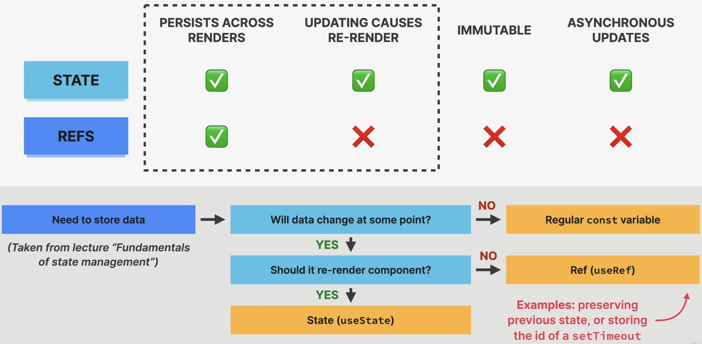

How NOT to select a DOM elements in React
Task: Focus the Search field at application start (initial render).
We could do that via a effect handler function within the respective component:
function Search({ query, setQuery }) {
useEffect(function () {
const element = document.querySelector(".search");
console.log(element);
element.focus();
}, []);
return (
<input
className="search"
type="text"
placeholder="Search movies..."
value={query}
onChange={(e) => setQuery(e.target.value)}
/>
);
}
This is not a good practice as React is all about using a declarative style, not imperatively manually manipulating the DOM by selecting an element (same as we don’t manually add event listeners to elements).
Introducing another hook: useRef
What are refs?
It is a “Box” with a mutable
.currentproperty, which persists across renders (“normal” variables are always reset), just like state.Any data can be written and read from
.current. Unlike any other variable in React, it is mutable.Two big use cases:
Create variables that stay the same between renders (e.g. previous state,
setTimeoutid, etc)Select and store DOM elements
Refs are for data that is NOT rendered: usually only appear in event handlers or effects, not in JSX (otherwise use state). We can use them in JSX, but that is not intended -> use state instead.
Do NOT read or write
.currentproperty in render logic (same as with state, as this would cause side-effects). Mutations are usually performed inuseStatesetter functions.

State vs. Ref
refs update synchronously, hence updated values can be used immediately
Hint
State variables are considered as immutable, because its setter function only changes the reference, that the state variable points to, not replacing the state variable’s value:
user.name = "Arne"; // ❌ mutation — same reference
setUser(user); // React sees: same reference → no change → no re-render
Select DOM elements via Ref
Important
Not the Ref object itself (e.g. inputElement below) references the DOM element,
but its .current property (e.g. inputElement.current).
Three steps:
Create ref using
useRef:const inputElement = useRef(null);
for DOM elements we usually use
nullas default
Pass the Ref object into the element in your JSX:
return ( <input className="search" type="text" placeholder="Search movies..." value={query} onChange={(e) => setQuery(e.target.value)} ref={inputElement} /> );
Reference the Ref object’s
current, which now holds the reference to the DOM element, inside non-render logic (e.g. insideuseEffect):useEffect(function () { inputElement.current.focus(); }, []);
Another task: Focus DOM element when hitting “Enter” key
Important
When referencing the document DOM element, we cannot use a Ref.
Here, again using an effect to focus on the Search input element. As we also want
to unregister the event handler, once the page paint completed due to hitting the
“Enter” key, we use a callback function when adding the event listener and again
in the cleanup function when calling document.removeEventListener() to remove
that same event listener:
const inputElement = useRef(null);
useEffect(
function () {
function callback(e) {
if (e.code === "Enter") {
inputElement.current.focus();
setQuery("");
}
}
document.addEventListener("keydown", callback);
return () => document.removeEventListener("keydown", callback);
},
[setQuery]
);